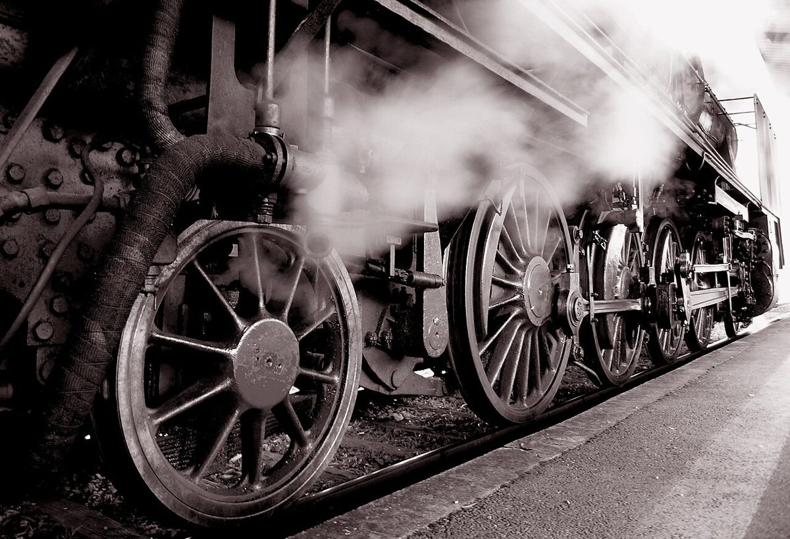
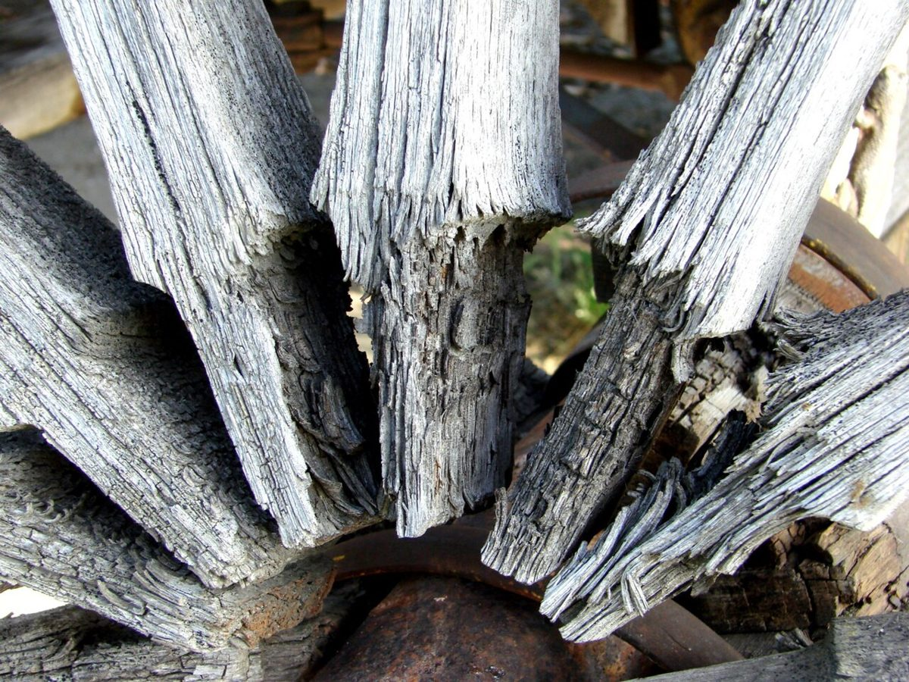

SPOKE 02
店のこと
お店について確認できているのは、所在地とInstagramのアカウントだけです。
このページの「想像してみる」部分は、制作側が想像して書いたものです。お店の実際の様子・考え・メニューとは関係がありません。
確認できていること
- 店名は「ANGLE COFFEE HUB」、業種はカフェ(コーヒー)
- 所在地は宮城県白石市大手町3-1(〒989-0276)
- 電話番号はなし。連絡はInstagramから
- 営業時間・定休日・メニュー・価格・ご予約・駐車場は準備中

想像してみる
「ANGLE」と「HUB」から
由来は分かりません。制作側は、ANGLEという英単語から「角度」や「見る向き」を、HUBから「中心」や「人が集まる場所」を連想しました。どちらも制作側の連想で、実際のお店の姿ではありません。
